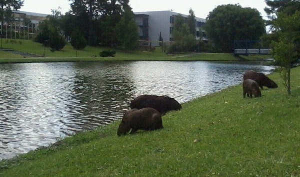

Grandes capiravas na universidade Positivo!

Na manhã de ontem, um evento inusitado tomou conta do campus da Universidade positivo: um grupo de
capivaras, com seu passo lento e olhar sereno, apareceu para passear pelas áreas verdes da instituição,
deixando estudantes, professores e funcionários completamente surpresos. Desde então, o cenário de
convivência entre os seres humanos e esses mamíferos herbívoros tem gerado uma onda de curiosidade,
encanto e até reflexão sobre como a fauna urbana pode influenciar a dinâmica dos espaços acadêmicos.
O Encontro
Os primeiros avistamentos começaram há algumas semanas, mas foi ontem que o "bando" de capivaras se fez notar, passando despreocupadamente por entre os bancos de jardim, os caminhos de pedestres e até mesmo ao lado das bibliotecas, enquanto os alunos tiravam fotos, filmavam e compartilhavam suas reações nas redes sociais. Em questão de horas, o campus se transformou em um cenário digno de um documentário da vida selvagem.“Quando vi uma capivara se aproximando do prédio onde tenho aula, achei que estava sonhando. Sempre li sobre esses animais em livros, mas nunca imaginei que teria a chance de vê-los tão de perto. Elas são enormes e ao mesmo tempo tão calmas”, contou Julia Mendes, estudante de Biologia, enquanto observava uma capivara se banhando em uma pequena lagoa.
A Vida Acadêmica em Paz
Embora as capivaras sejam conhecidas por sua natureza dócil e sociável, a presença delas no campus gerou um debate entre os membros da universidade. Para alguns, elas oferecem uma pausa refrescante na rotina atribulada da faculdade. "Esses momentos em que posso simplesmente parar para observar a natureza ao meu redor me ajudam a diminuir a ansiedade. Nunca pensei que seria capaz de ver um animal selvagem tão perto da minha sala de aula", comentou Bruno Souza, aluno de Psicologia.No entanto, nem todos estão tão encantados. Funcionários da universidade expressaram preocupações quanto à segurança dos animais e dos próprios estudantes, além do impacto ambiental da presença das capivaras. "Não podemos ignorar o fato de que esses animais, embora pacíficos, podem gerar problemas. Eles consomem plantas e mudam a dinâmica do ecossistema local. É preciso entender como garantir que todos convivam de maneira segura", afirmou Mariana Silva, bióloga que trabalha no departamento ambiental da universidade.
Biólogos Avaliam a Situação
O encontro das capivaras no campus tem atraído a atenção de especialistas, que estão sendo consultados pela administração da faculdade para garantir que a convivência entre os animais e a comunidade acadêmica seja harmoniosa. Segundo o biólogo e professor da universidade, Dr. Felipe Rocha, a visita das capivaras pode ser explicada pela proximidade da área verde do campus com rios e pequenos corpos d'água, onde as capivaras se sentem em casa."As capivaras são animais semiaquáticos e, por isso, têm uma forte atração por ambientes próximos à água. A universidade, por estar situada perto de uma área com vegetação rica e lagos, acabou se tornando um local propício para esses animais. A princípio, elas não representam risco, mas é importante que a convivência seja bem monitorada para garantir a segurança de todos, humanos e animais", explicou Dr. Rocha.
A Filosofia do Encontro: Natureza e Estudo
A presença das capivaras gerou também uma reflexão entre os alunos sobre o papel da natureza no cotidiano acadêmico. Durante o intervalo para o café, muitos estudantes debateram como a convivência com a fauna local pode melhorar o bem-estar psicológico e estimular novas formas de aprendizado."A natureza tem um papel fundamental no nosso equilíbrio emocional. Observando essas capivaras, me sinto mais tranquilo, como se elas estivessem nos ensinando a desacelerar e a aproveitar o presente. E essa lição é algo que precisamos mais do que nunca na vida universitária", comentou a estudante de Filosofia, Beatriz Oliveira.
O impacto das capivaras no campus tem sido visível também nas redes sociais. O Instagram da universidade, que conta com mais de 50 mil seguidores, está repleto de posts com fotos e vídeos das capivaras passeando pelo campus. O hashtag #CapivarasDaFacul se tornou um dos mais comentados nos últimos dias, com estudantes, professores e até ex-alunos compartilhando suas experiências. Alguns até começaram a organizar “tours” para ver as capivaras ao vivo, transformando a universidade em uma espécie de ponto turístico inesperado.

O Futuro das Capivaras na Universidade
O que começa como uma simples curiosidade está se tornando um fenômeno social dentro da universidade. A administração universitária já iniciou discussões sobre como melhor integrar as capivaras ao ambiente acadêmico, sem comprometer a segurança e o equilíbrio ambiental. A possibilidade de adotar um programa educativo, que envolva os alunos no monitoramento e cuidado das capivaras, está sendo considerada.Além disso, com o objetivo de proteger a fauna local e minimizar qualquer impacto negativo sobre o ecossistema, a universidade está pensando em aumentar as áreas de convivência com os animais, criando zonas específicas para observação e preservação.
"É uma oportunidade única de aprendizado. Podemos usar esse momento para ensinar sobre a importância da preservação ambiental e sobre a interação dos seres humanos com os animais selvagens. E claro, isso também reforça a imagem da nossa universidade como um lugar que valoriza a natureza", concluiu o reitor, Professor João Almeida, em uma breve entrevista à imprensa.
Enquanto isso, as capivaras continuam a sua jornada tranquila pelo campus, deixando todos à sua volta mais conectados com a natureza e mais reflexivos sobre a vida acadêmica e a preservação do meio ambiente. Para muitos, o que parecia ser uma simples visita de animais selvagens agora é uma lição de paciência, respeito e harmonia.